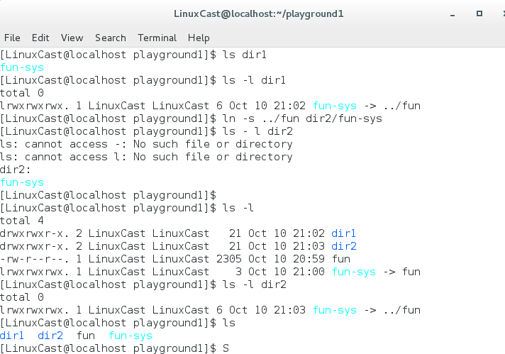

1、cp ：复制文件或者目录
cp file1 file2 将文件file1 复制到file2
cp file ... dir 将一个或者多个file文件复制到目录dir（dir 必须已存在）
当有三个圆点跟在一个命令的参数后面， 这意味着那个参数可以重复
Option
- i --interactive 交互式的询问 提示用户确认
- u --update 只复制目标文件不存在的文件，或者文件内容新于目标目录中已经存在的文件
-r --recursive 递归的复制目录及目录中的内容
-v --verbose 显示翔实的操作信息
2、mv ：移动或者重命名文件
mv item1 item2 把文件item1移动或者重命名位item2
mv item ... directory 将一个或多个条目移动到目录directory（directory必须已经存在）
-v same as above
-u
文件与文件之间，目录与目录之间的移动或者复制，不需要目标参数一定存在，但如果是文件与目录之间的移动或者复制，目标目录或者文件一定要存在
3、mkdir 创建目录
4、rm 删除文件或者目录
5、ln硬链接与符号链接（symbol）
①、硬链接：
ln file link-name 将link-name的链接指向file
硬链接不能跨分区
ln -s fun ../fun dir2/fun-sys
（这条命令的运行时的工作目录位 dir2 所以 ../ 代表 dir2的父目录 ）
对于符号链接，有一点值得记住，执行的大多数文件操作是针对链接的对象，而不是链接本身。而 rm 命令是个特例。当你删除链接的时候，删除链接本身，而不是链接的对象。

cp dir1/* dir2 dir2 必须存在，将dir1中的内容复制到dir2中。
cp dir1 dir2 若dir2不存在，则等同于上式；若dir2存在则将dir1本身及dir1中的内容复制到dir2中。
6、通配符：以上命令均支持通配符操作，以便批量的操作文本文件。